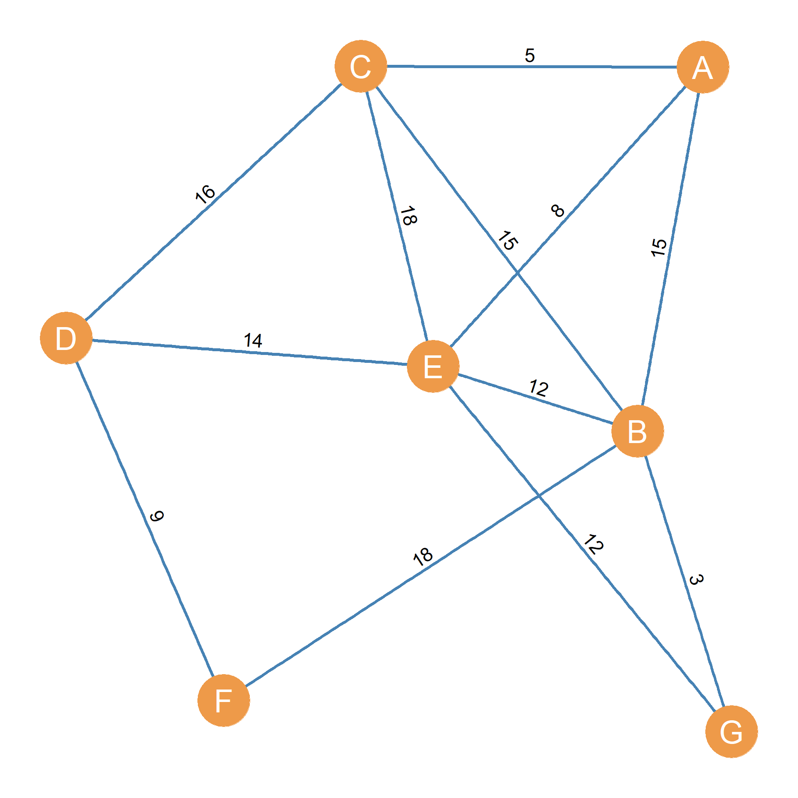
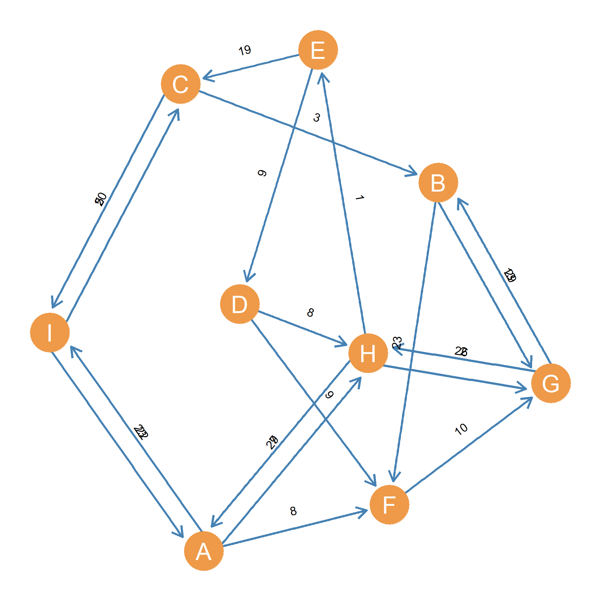
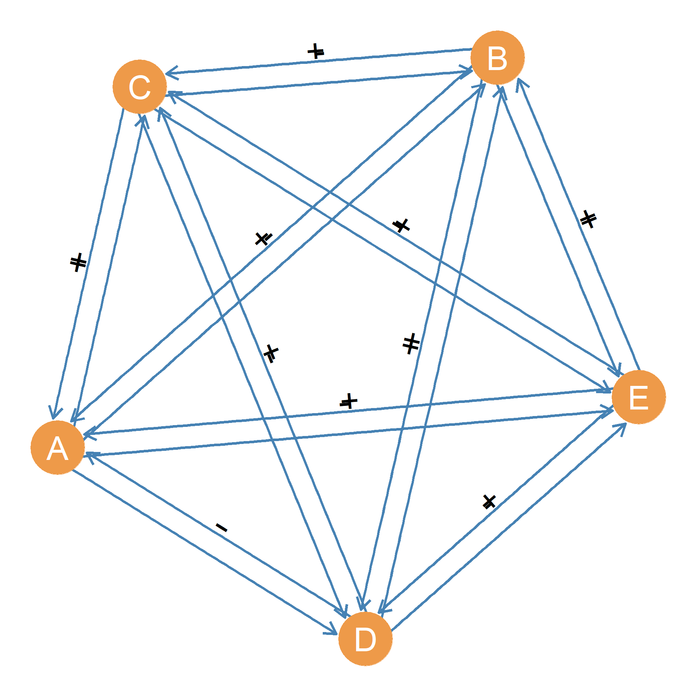
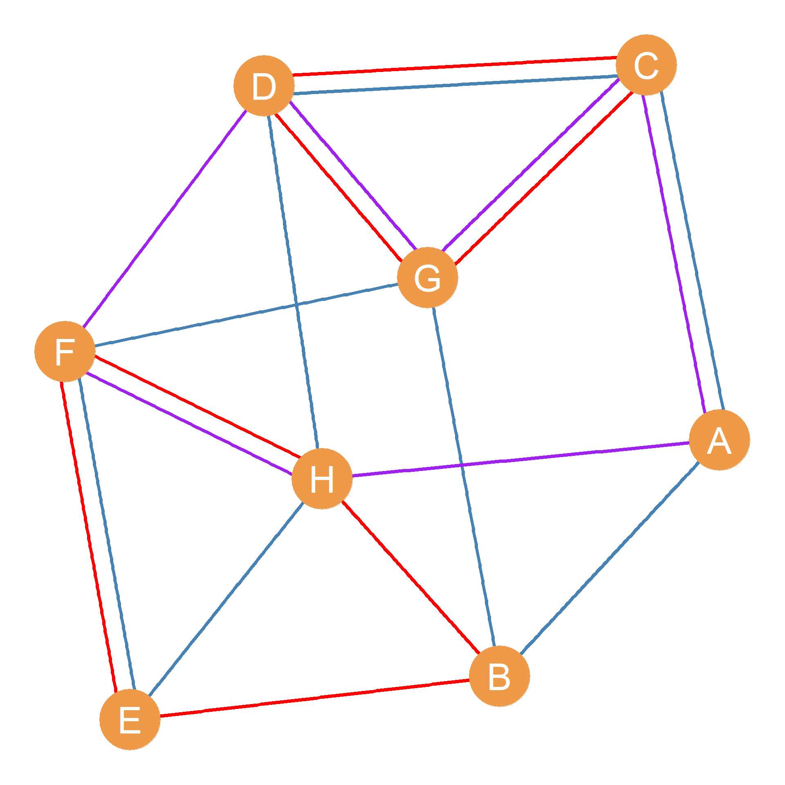

Other Types of Graphs
Tie Strength and Weighted Graphs
In the preceding lessons, our understanding of relationships have centered around their existence or absence. In certain situations, it may be socially meaningful to consider relationships in terms of their intensity or frequency- or what is often referred to as the “strength” of the tie (Marsden and Campbell 1984).
For example, people might have many friends, and friendship ties can be turned into graphs as done in the above examples. However, people often have different types of friends, and some friends are more important than others. This is the idea behind the concept of having a best friend. Your best friend might be more important to you than all your other friends, and it might be sociologically meaningful to the topic you are studying to capture this difference in your network. While it might be a little meaningless to just mark your best friend different from the rest, we can think of social situations where a series of gradations might make sense.
For example, let’s say that we want to understand who is the leader in a group of friends. By definition, we’ve already bound the case as an existing group of friends. If everyone had a tie to the others, because they’re all friends, then we would not be able to detect any variation between these different friends. However, if we looked at the frequency of text messages sent from one of these friends to another one, then we would likely begin to detect variation.

The variation in the strength of these ties in social networks is captured by using weighted graphs to represent such networks. Figure 1 shows an example of a undirected weighted graph. In weighted graphs, the relative intensity of the relationships between actors in the network is quantified, thus facilitating the comparison of particular actors and relationships within the network. This is done by associating each edge in the graph with a number, call the weight of that edge. So instead of being just a set of vertices and edges, a weighted graph (\(G_w\)) is a set of three sets. A set of vertices (\(V\)), a set of edges (\(E\)), and a set of weights (\(w\)) associated with each edge:
\[ G_w = (E, V, w) \tag{1}\]
Thinking of Figure 1 as a type of undirected tie, the numbers can be thought of as the intensity of the link between two people. Perhaps these are the number of times two people have met for coffee or a drink during last year. Inspecting the figure, we can see that actors C and E hang out together quite frequently (perhaps they are close, or are working on a project together). Actors B and G, on the other hand, hang out together less often.
Actors also seem to have preferences as to which people they hang out with most frequently with among those they are connected to. For instance, actor C has four contacts in the network. However, they have met only a few times with A but meet quite a lot times with their other contacts. This means that C has a weak tie with A and a strong tie to the rest of their friends.

Weighted graphs can also be directed, like the one shown in Figure 2. The number along each asymmetric tie could be the number of times one actor calls or texts the other, or the number of times they retweet the other other person, or the number of times they like a post from the other person on Instagram. Note that all of these things can lead to imbalance, such that in weighted graphs, relationships can be non-reciprocal even if the two actors are connected bi-directionally (as we will see in a future lesson). For instance, C directs an edge of weight \(w= 20\) towards I (perhaps a number of texts), but I only sends a directed edge of weight \(w = 5\) towards C.
From varying weights among edges in a social network, representing some varying frequency or intensity of the relationship in the real world, we can better understand important sociological phenomena.
Sentiment Relations and Signed Graphs
Sentiment Networks
So far we have talked about social relations as having different properties above and beyond being either “on” or “off.” Social relations can be weak or strong or they can be multiplex or uniplex. Another property that social relations can have is valence. That is, you can be connected to other people via either positive or negative links.
For instance, you can love or hate someone. You can like or dislike a person. Somebody can consider you their enemy or their friend. A terrible person can bully you, or you a kind person can help you. What all of these contrasts in connectivity have is that they distinguish relations by their valence, and that valence takes on one of two possible values: They can be either be positive or negative relations.1 Social Networks that are composed of valenced relationships are called sentiment networks.
Can you think of other examples of sentiment networks you have experience with?
Signed Graphs
As you might have already suspected, there is a special type of graph that is useful for representing sentiment networks. This is called a signed graph (Harary 1953). An example of a signed graph is shown in Figure 3). This signed graph is complete because all the possible relations between nodes exist. Note also that the signed graph is directed because each node is both a source and a destination node for directed asymmetric ties.

Mathematically, one way to think about a signed graph is as a special kind of multigraph (\(G_S\)) featuring two disjoint sets of edges: positive links (\(E^+\)) and negative links (\(E^-\)). Recall that two sets are disjoint when they don’t share any members. That means their intersection is the empty set. In this case:
\[ E^+ \cap E^- = \emptyset \]
Thus, a signed graph is a set of three sets:
\[ G_S = (E^+, E^-, V) \tag{2}\]
Signed graphs have a number of unique properties. Some of them are the basis for entire network theories, such as balance theory, status theory, and karma theory that we will discuss later. For instance, reciprocity, just as in weighted graphs, takes on a different meaning in complete signed graphs. In the usual graph theory sense, all the relations in Figure 3 are “reciprocal” because the graph is complete and thus all the dyads are mutual.
However, in complete signed graphs, reciprocity is better defined as mutual dyads that have the same sentiment going from one node to the other. In a signed graph mutual dyad, the relationship is reciprocal if both people think that they are friends or both people hate one another. A mutual dyad in a signed graph is non-reciprocal if one person likes the other person, but that person hates the first person. In the graph theoretic sense, reciprocal dyads in a signed graph are those that are connected by two asymmetric edges of the type: either positive or negative. A dyad is non-reciprocal if the two nodes are connected by asymmetric edges of different types.
Thus, in Figure 3, A and C have a mutually positive relationship; A likes C and C reciprocates by liking A back. In the same way, A and D have a mutually negative relationship; A hates D and D reciprocates by hating A back. While the notion of “reciprocity” in negative interactions like hating, or bullying seems counter-intuitive (because we tend to think of reciprocity as an inherently positive thing), we will see later, when discussing theories of negative interactions, that negative reciprocity makes sense as a driver of human behavior, and may explain important phenomena like the escalation of violence among urban gangs (Papachristos et al. 2013). Finally, note that nodes B and C have a non-reciprocal sentiment relation; C likes B but B does not reciprocate the sentiment. Instead, B dislikes C. This brings us to another property of signed graphs, which is that this type of “imbalance” makes us think that there is something wrong with this dyadic state, and that something will have to give. Either B starts to hate C (because their feelings are hurt), or B ultimately convinces C to like them back.
The idea that there are some states of signed graph that makes “more sense” than others (because the various sentiment relations are reciprocated) is behind the notion of balance. It makes sense to us that if someone likes somebody they should like them back, or if they hate somebody, that other person should hate them back. Those states seem “balanced”; it makes less sense when sentiment relations have opposite signs across a dyad. Imbalance makes you think about a process that in the future will change the state of the links in the graph so that they go from imbalanced (e.g., non-reciprocal sentiment relations) to balanced (reciprocal sentiment relations). We will see later, that this “balance” reasoning can be extended, in signed graphs, to triadic configurations (subsets of three nodes in the graph), and from from there to the entire graph, so that we can speak of balanced and imbalanced triads, and balanced and imbalanced graphs.2
Advanced Topic: Multiplexity and Multigraphs
One simplifying assumption made in much of previous and contemporary network research, is that people in the network are linked by only type of tie at a time (e.g., linking, friendship, texting). The reality is that connected dyads in social networks are usually connected by multiple type of ties at the same time. For instance, you text your friends, are in the same class as them, and sometimes work together. This means that a friend, who you text frequently, who is also a co-worker and takes the same class as you is linked to you in at least four different ways! This phenomenon, first noticed by early qualitative fieldwork by social network anthropologists (Barnes 1954; Bott 1955) and early quantitative work by sociologists (Verbrugge 1979) is called multiplexity. In a network a multiplex dyad is a dyad in which the two nodes are connected by multiple types of ties at the same time.

Multiplexity, as a common feature of social life, can be represented using a special type of graph called a multigraph. A multiple graph (\(G_M\)) is just like a regular graph, except that instead of having a single edge set \(E\), it has multiple edge sets \((E_1, E_2,\dots V_K)\), where \(K\) is the total number of different types of relations in the network:
\[ G_M = (E_1, E_2,\dots E_K, V) \tag{3}\]
A network diagram of a multigraph is shown in Figure 4. This graph has eight nodes joined by three different types of ties (\(K = 3\)). The ties in a multigraph are labeled so that we can tell the different kinds apart. In the figure, the type-of-tie labels are represented by different edge colors. For instance, if the three relations we are studying are friendship (blue), co-working (red), and being a member of the same soccer club (green), then we can see nodes D and C are a multiplex dyad because are connected in two distinct ways (they are co-workers and members of the soccer club). Nodes C A are also a multiplex dyad because they are friends who also happen to work together. Nodes B and H, by way of contrast, are a regular old uniplex dyad being connected by a single type of tie (they are both in the soccer club, but do not work together nor do they think of one another as friends). The same goes for the dyad formed by nodes D and F who are just friends who neither work together nor belong to the same club. Finally, note that in Figure 4 nodes A and D are part of a regular old null dyad (they are not connected by any type of relation).